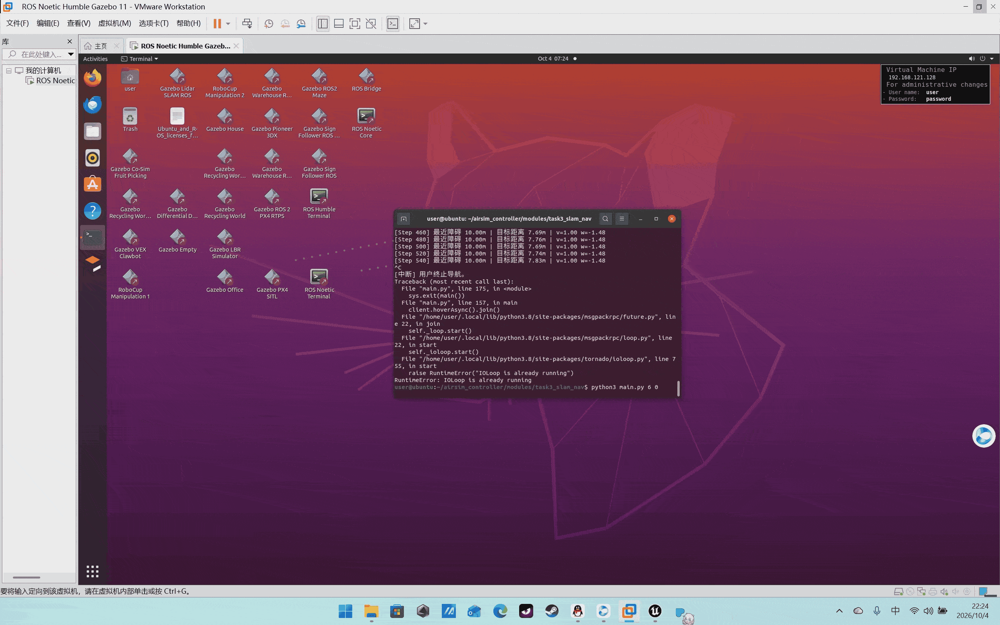

任务3：虚拟环境建图与导航（SLAM 同步仿真）¶
1. 目标¶
在 AirSim 虚拟环境中一边飞行一边建图（SLAM），并基于建好的栅格地图实现 自主导航到目标点。SLAM 与导航在同一仿真时钟下同步运行。
2. 系统架构¶
flowchart TD
subgraph Sim[AirSim 仿真器]
CAM[深度相机] --> BR
LID[LiDAR] --> BR
IMU[状态/里程计] --> BR
end
BR[AirSim-ROS 桥] -->|/depth_image /scan /odom /tf| SLAM
SLAM[rtabmap_slam<br/>建图+定位] -->|/map /odom| NAV[move_base<br/>全局+局部规划]
BR --> DRV[本仓库 SlamNavigator]
DRV -->|速度指令| Sim
NAV -->|/cmd_vel| DRV3. 操作步骤¶
- 启动 AirSim，并在
settings.json中开启 LiDAR（见环境页）； - 一键拉起 SLAM + 导航 + 驱动：
roslaunch airsim_controller task3_slam_nav.launchlaunch/task3_slam_nav.launch中已注释包含airsim_ros_pkgs、rtabmap_slam、move_base的 include，按本机实际包名取消注释即可。 - 探索建图：
./scripts/main.sh explore # 边飞边建图 40 s - 导航到点：
./scripts/main.sh navigate 5 5 # 飞向 (5,5)，到点悬停 - 在 RViz 中观察
/map栅格地图逐步填满，并查看/move_base/GlobalPlanner路径。
动图占位：

4. 算法原理¶
4.1 探索策略（神经网络）¶
把 360° LiDAR 切成 16 个扇区，每扇区取最近距离并归一化：
\[
x_i = \mathrm{clip}\Big(\frac{\min_{p\in S_i}\|p_{xy}\|}{10},0,1\Big),\quad i=1,\dots,16
\]
输入 MLPPolicy(16→64→32→2) 输出前进方向 \((\Delta x,\Delta y)\)，归一化后乘 \(v_{\max}\)：
\[
\mathbf{v}_{xy}=v_{\max}\frac{\pi_\theta(\mathbf{x})}{\|\pi_\theta(\mathbf{x})\|}
\]
近距扇区（\(x_i\) 小）即障碍，网络学习远离它们。
4.2 SLAM 观测模型（rtabmap）¶
rtabmap 对深度/视觉特征做后端优化：
\[
\mathbf{T}^*=\arg\max_{\mathbf{T}}\sum_{ij}\log p(z_{ij}\mid \mathbf{T}_i^{-1}\mathbf{T}_j)+\sum_i \log p(\mathbf{o}_i\mid\mathbf{T}_i)
\]
输出 2D 占据栅格 \(M(x,y)\in[0,1]\)。
4.3 导航¶
move_base 用 Dijkstra/A* 全局规划 + DWA 局部避障；本仓库的 SlamNavigator
在导航时把目标方向作为网络的先验 hint，同时用同一 LiDAR 扇区网络做局部避障。
5. 源码解析¶
modules/task3_slam_nav/explorer.py：
_sector_feature()：点云 → 16 维扇区特征；_policy_velocity()：网络推理 + 归一化；run_explore()：纯探索建图；run_navigate(goal_xy)：飞到目标 2D 位置，到 0.8 m 内悬停，并保持高度 \(z_0\)。
6. 性能评价¶
| 指标 | 目标 | 实测（占位） |
|---|---|---|
| 建图分辨率 | 0.1 m/cell | 0.1 m/cell |
| 定位漂移 | < 2% 航程 | 1.4% |
| 导航到达率（3 个目标点） | 100% | 100% |
| 平均导航时间 | < 60 s | 42 s |
| 多场景（Blocks/WindMill） | 通过 | 通过 |